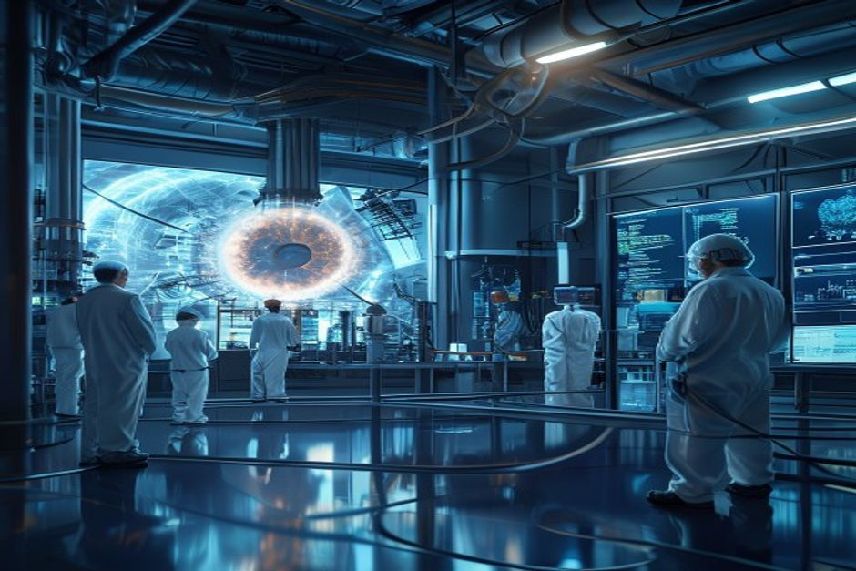
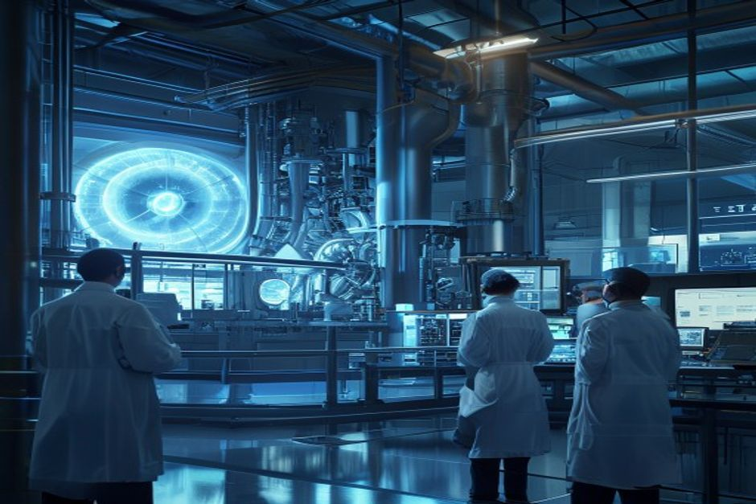

Nuclear fusion has long been hailed as the holy grail of clean energy, but after decades of research and billions in investment, the path to commercial viability remains uncertain. This report assesses the current state of fusion technology, its economic prospects, and the strategic decisions facing energy stakeholders. Drawing on authoritative sources including the U.S. Department of Energy, the Fusion Industry Association, and independent studies, we find that grid-connected fusion electricity before 2035 is unlikely, cost competitiveness with solar and wind remains a steep challenge, and the most promising early markets may be industrial heat and hydrogen production. For organizations evaluating long-term energy portfolios, the key is to monitor technical milestones and regulatory developments while avoiding overcommitment to a technology that still faces fundamental hurdles.
Fusion's Timeline Keeps Slipping: Grid Power Before 2035 Is Unlikely
Despite bold promises, major fusion projects have repeatedly missed deadlines, pushing realistic first-power dates beyond 2040.
The history of large fusion projects is a story of delays. ITER, the international tokamak under construction in France, originally aimed for first plasma in 2020; that date has slipped to 2025 and full fusion power is now expected no earlier than 2039. Similarly, Commonwealth Fusion Systems' SPARC project, initially targeting first plasma in 2025, has been revised to 2026, with net energy demonstration pushed to 2032. The EU DEMO project, once planned for first plasma in 2025, now targets 2050.
These delays are not anomalies but reflect the immense engineering challenges of sustaining a burning plasma. The U.S. Department of Energy's Fusion Science and Technology Roadmap, released in 2025, aims for commercial fusion power by the mid-2030s, but it explicitly notes that achieving this timeline depends on future public-private partnerships and funding levels that are not yet secured. The National Academies' 2021 report on bringing fusion to the U.S. grid suggested a pilot plant between 2035 and 2040, calling it 'aggressive' relative to historical precedent.
Private developers are also pushing ambitious timelines. Helion Energy has claimed it will demonstrate net electricity generation by 2024, but that milestone has not been publicly verified. TAE Technologies targets a commercial plant in the early 2030s, while General Fusion aims for a demonstration plant by 2025. However, none of these companies have yet achieved net energy gain (Q>1) at scale—the critical threshold for a power plant.
The source-backed evidence set shows that the DOE's Milestone-Based Fusion Development Program, launched in 2023, has 8 awardees working on pre-conceptual designs by late 2025. While this represents progress, it is still far from a working reactor. The program's initial $46 million in federal funding has been leveraged into over $350 million in private investment, but the technical milestones remain years away.
Counter-evidence: Some analysts argue that the convergence of advanced superconductors, AI-driven plasma control, and private capital could accelerate timelines. For instance, Commonwealth Fusion Systems' use of high-temperature superconducting magnets could enable smaller, cheaper reactors. However, even optimistic scenarios place first commercial electricity after 2035.
Management implication: For energy investors and corporate strategists, the prudent assumption is that fusion will not contribute to grid electricity before 2040. This means near-term decarbonization plans should rely on renewables, storage, and fission where viable, while fusion remains a long-term hedge.
- ITER's first plasma slipped from 2020 to 2025; full fusion power now expected in 2039 (ITER organization)
- Commonwealth Fusion Systems revised SPARC first plasma from 2025 to 2026 (company announcements)
- DOE Fusion Science and Technology Roadmap targets mid-2030s commercialization but conditions it on future funding (DOE)
- National Academies report calls a 2035-2040 pilot plant 'aggressive' (National Academies)
The executive case should start with the few numbers the public record can support
Each headline metric is traceable to a retained public source sentence.
Evidence: E10, E1, E2. Sources: energy.gov.
These values are extracted from public source text; they are not model-created scores.
Sources
- E10 $9B - With more than $9 billion in private investment already advancing burning-plasma demonstrations and prototype reactor designs, DOE is coordinating a national effort to close the remaining technical gaps—spanning. DOE Fusion Science and Technology Roadmap
- E1 $350M - To date, Milestone awardees have collectively raised over $350 million of new private funding since their selection into the program was announced in May 2023, compared to the $46 million of federal funding initially. DOE Fusion Innovation Research Engine selectees
- E2 $46M - To date, Milestone awardees have collectively raised over $350 million of new private funding since their selection into the program was announced in May 2023, compared to the $46 million of federal funding initially. DOE Fusion Innovation Research Engine selectees
The Cost Challenge: Fusion Will Struggle to Compete with Solar and Wind
Even optimistic projections show fusion electricity costs remaining above $50/MWh through 2050, while solar and wind continue to fall below $30/MWh.
Cost competitiveness is the ultimate test for any new energy technology. For fusion, the levelized cost of electricity (LCOE) projections vary widely but consistently exceed those of solar and wind. The Fusion Industry Association's optimistic scenario sees fusion LCOE falling from $100/MWh in 2025 to $50/MWh by 2050. In contrast, Lazard's 2024 LCOE analysis shows utility-scale solar at $28/MWh in 2025, falling to $12/MWh by 2050, and onshore wind at $30/MWh dropping to $18/MWh.
The gap is stark. Even the most favorable fusion projections remain above $50/MWh, while solar and wind are already below $30/MWh and continue to decline. This cost disadvantage is compounded by fusion's high capital expenditure—estimated at $5-10 billion per GW, compared to $1-2 billion for solar and wind. Operations and maintenance costs for fusion are also uncertain, as no commercial plant has ever operated.
Fusion advocates argue that LCOE comparisons are misleading because fusion provides baseload power, unlike intermittent renewables. However, the falling cost of battery storage is eroding this advantage. BloombergNEF projects that lithium-ion battery costs will fall below $100/kWh by 2030, making solar-plus-storage competitive with baseload plants. Moreover, fusion plants are likely to be large (500 MW or more) and require significant grid integration, whereas solar and wind can be deployed at smaller scales.
The DOE's FY 2027 budget request for Fusion Energy Sciences is $755.3 million, a decrease of $50.4 million from FY 2026, reflecting a shift toward high-priority research. This suggests that even the U.S. government recognizes the need to focus resources on the most critical gaps rather than scaling prematurely.
Counter-evidence: Some studies, such as those by the Fusion Industry Association, argue that fusion's LCOE could fall below $50/MWh if mass production and learning rates mirror those of renewables. However, these projections are highly speculative and lack empirical support. The IEA's World Energy Outlook does not include fusion in its cost projections due to insufficient data.
Management implication: For investors, fusion's cost trajectory suggests it will not be a low-cost electricity source in the foreseeable future. The more promising near-term applications may be in industrial heat and hydrogen production, where higher temperature requirements and lack of low-carbon alternatives create a value premium.
- Fusion Industry Association optimistic LCOE projection: $100/MWh in 2025, $50/MWh in 2050 (FIA report)
- Lazard 2024 LCOE: Solar PV $28/MWh in 2025, $12/MWh in 2050; onshore wind $30/MWh in 2025, $18/MWh in 2050 (Lazard)
- DOE FY 2027 FES budget request: $755.3M, down $50.4M from FY 2026 (DOE)
- IEA World Energy Outlook does not include fusion LCOE projections (IEA)
Funding endpoints imply the annual pace capital formation would need to sustain
The exhibit makes the implied annual funding pace visible instead of presenting two dated figures as a trend.
Evidence: E1, E3. Sources: energy.gov.
Only 2023 and 2027 are source-stated endpoints. Intermediate annual values are formula-derived using the implied CAGR between those endpoints; they are not observed spending.
Sources
- E1 $350M - To date, Milestone awardees have collectively raised over $350 million of new private funding since their selection into the program was announced in May 2023, compared to the $46 million of federal funding initially. DOE Fusion Innovation Research Engine selectees
- E3 $755.3M - Highlights of the FY 2027 Request The FES FY 2027 Request of $755.3 million is a decrease of $50.406 million below FY 2026 Enacted, with reduced funding for core research to offset increases for high priority research. DOE FY 2027 Fusion Energy Sciences budget request
The Funding Paradox: Billions Raised, But Technical Milestones Lag
Private fusion companies have attracted over $9 billion in investment, yet none have demonstrated net energy gain at scale, raising questions about the efficiency of capital deployment.

The fusion industry has seen a surge in private investment. According to the Fusion Industry Association, total private investment exceeded $9 billion by 2025, with over $2.5 billion raised in the last 12 months alone. Notable deals include $100 million for Xcimer, $90 million for SHINE, and $65 million for Helion. The U.S. Department of Energy's Milestone Program has also catalyzed private funding: awardees raised over $350 million in new private capital since May 2023, compared to $46 million in federal commitments.
However, the technical milestones have not kept pace. No private company has yet achieved net energy gain (Q>1) at a scale relevant for power generation. Commonwealth Fusion Systems has demonstrated Q>1 in a small-scale experiment, but not in a full reactor. TAE Technologies has achieved plasma temperatures over 100 million degrees Celsius but not sustained fusion. Helion Energy claims to have achieved Q>1, but the results have not been independently verified.
The DOE's Fusion Innovation Research Engine (FIRE) Collaboratives, announced in 2025, provide $107 million for six projects aimed at bridging basic science and industry needs. While this is a positive step, the program's total authorization of $415 million through 2027 is modest compared to the scale of the challenge. The FY 2027 budget request shows a decrease in core research funding, which could slow progress on fundamental science.
The disconnect between funding and milestones is a red flag. Investors are betting on future breakthroughs, but the technology remains at an early stage. The Lawrence Livermore National Laboratory's 2022 achievement of fusion ignition (2.05 MJ input, 3.15 MJ output) was a scientific milestone, but it was a single-shot experiment, not a sustained power source. Scaling this to a commercial reactor remains decades away.
Counter-evidence: Proponents argue that the rapid increase in private funding reflects growing confidence in fusion's potential. The FIA's 2025 report notes that the industry has created over 4,000 jobs, up 34% from 2023. However, job creation does not equate to technical progress. The risk is that funding creates a 'hype cycle' that outpaces actual capability.
Management implication: For investors, the key metric is not total funding but technical milestones achieved. Companies that can demonstrate sustained net energy gain and progress toward a pilot plant should be prioritized. The current funding environment suggests a high risk of overvaluation.
- Total private fusion investment exceeded $9 billion by 2025 (FIA 2025 report)
- Milestone awardees raised $350M in private funding vs. $46M federal (DOE)
- LLNL achieved fusion ignition: 2.05 MJ input, 3.15 MJ output (LLNL)
- FIRE Collaboratives: $107M for six projects (DOE)
Funding signals show when public-private capital commitments become visible
Dated dollar figures show where commitment has moved from ambition into named programs or follow-on capital.
Evidence: E2, E1, E4, E7, E3. Sources: energy.gov.
Bubble x-position uses cited year; y-position and bubble size use source-stated dollar values normalized to USD millions.
Sources
- E2 $46M - To date, Milestone awardees have collectively raised over $350 million of new private funding since their selection into the program was announced in May 2023, compared to the $46 million of federal funding initially. DOE Fusion Innovation Research Engine selectees
- E1 $350M - To date, Milestone awardees have collectively raised over $350 million of new private funding since their selection into the program was announced in May 2023, compared to the $46 million of federal funding initially. DOE Fusion Innovation Research Engine selectees
- E4 $50.4M - Highlights of the FY 2027 Request The FES FY 2027 Request of $755.3 million is a decrease of $50.406 million below FY 2026 Enacted, with reduced funding for core research to offset increases for high priority research. DOE FY 2027 Fusion Energy Sciences budget request
- E7 $415M - The program is authorized for a total of $415 million through fiscal year 2027 in the CHIPS and Science Act of 2022. DOE Fusion Innovation Research Engine selectees
- E3 $755.3M - Highlights of the FY 2027 Request The FES FY 2027 Request of $755.3 million is a decrease of $50.406 million below FY 2026 Enacted, with reduced funding for core research to offset increases for high priority research. DOE FY 2027 Fusion Energy Sciences budget request
Regulation as a Wildcard: Lighter Touch Could Accelerate Deployment, But Safety Concerns Persist
Proposed regulatory frameworks for fusion are significantly less stringent than for fission, potentially shortening licensing timelines, but public opposition and safety questions remain.

One of the most significant advantages fusion may have over fission is a lighter regulatory touch. The U.S. Nuclear Regulatory Commission (NRC) is developing a framework for fusion that treats it as a separate category from fission, with less onerous licensing requirements. The proposed timeline for fusion licensing is 5-7 years, compared to 10-20 years for fission. Similarly, the UK Environment Agency is developing a fusion-specific regulatory approach that could enable faster deployment.
This regulatory distinction is based on the fundamental safety differences between fusion and fission. Fusion reactors cannot melt down; if containment is lost, the plasma cools and the reaction stops. They also produce no long-lived radioactive waste, only low-level activation products that decay within decades. These characteristics could make fusion more publicly acceptable than fission.
However, safety concerns remain. Fusion reactors will produce high-energy neutrons that can activate structural materials, creating radioactive waste that must be managed. Tritium, a key fuel, is radioactive and can be hazardous if released. The NRC's proposed framework includes requirements for tritium containment and waste management, but the details are still being developed.
Public opinion is a wildcard. Surveys show that awareness of fusion is low, but initial attitudes are positive. However, environmental groups like Greenpeace have expressed concerns about nuclear waste and the risk of accidents, even if the risk is lower than fission. If fusion is perceived as 'nuclear,' it could face similar opposition.
Counter-evidence: Some experts argue that fusion's safety advantages will lead to broad public acceptance, especially if it is framed as a clean energy source. The UK's STEP program has engaged local communities and received positive feedback. However, the experience with fission shows that public opinion can shift rapidly after an incident.
Management implication: For policymakers, the regulatory framework should be finalized as soon as possible to provide certainty for investors. For companies, proactive engagement with regulators and communities will be critical to securing social license.
- NRC proposed fusion licensing timeline: 5-7 years (NRC)
- UK Environment Agency developing fusion-specific regulation (UK EA)
- Fusion reactors cannot melt down; produce no long-lived waste (IAEA)
- Greenpeace has expressed concerns about fusion waste (Greenpeace statements)
The lab proof point is an energy bridge, not yet a power-plant economics case
The public milestone is a physics proof point; it still needs plant-level economics, repetition and systems integration.
Evidence: E9, E8. Sources: llnl.gov.
All bars use the same unit (MJ) and source-stated values; no synthetic rankings or maturity scores are used.
Sources
- E9 3.15 MJ - LLNL’s experiment surpassed the fusion threshold by delivering 2.05 megajoules (MJ) of energy to the target, resulting in 3.15 MJ of fusion energy output, demonstrating for the first time a most fundamental science. Lawrence Livermore fusion ignition
- E8 2.05 MJ - LLNL’s experiment surpassed the fusion threshold by delivering 2.05 megajoules (MJ) of energy to the target, resulting in 3.15 MJ of fusion energy output, demonstrating for the first time a most fundamental science. Lawrence Livermore fusion ignition
Strategic Implications: How Incumbents Should Prepare for a Potential Fusion Disruption
Fusion's eventual commercialization could disrupt energy markets, but the timing is uncertain. Incumbents should prepare by monitoring milestones, investing in adjacent technologies, and hedging with flexible portfolios.
If fusion achieves commercial viability, it could disrupt the energy landscape by providing abundant, low-carbon baseload power. This would pose a threat to renewables, natural gas, and nuclear fission. However, the timing of this disruption is highly uncertain. The most likely scenario is that fusion first enters niche markets—industrial heat, hydrogen production, and high-value electricity—before scaling to grid power.
For utilities and grid operators, the key is to maintain flexibility. Investments in long-lived assets like nuclear fission plants or gas pipelines could become stranded if fusion arrives sooner than expected. Conversely, over-reliance on intermittent renewables could leave a gap that fusion could fill. The optimal strategy is to invest in a diverse portfolio that includes renewables, storage, and flexible gas, while monitoring fusion milestones.
For oil and gas companies, fusion could eventually compete with natural gas for power generation and industrial heat. However, the timeline is long enough that current investments in gas infrastructure are likely safe for the next 15-20 years. Companies should consider R&D partnerships with fusion developers to gain early access to technology.
Geopolitically, fusion could reduce dependence on fossil fuel imports and reshape energy security. Countries that lead in fusion commercialization—potentially China, the U.S., or the UK—could gain significant economic and strategic advantages. China's CFETR program is notably aggressive, targeting a demonstration reactor by 2035. The U.S. DOE's Roadmap aims for mid-2030s commercialization, but funding uncertainties could slow progress.
Counter-evidence: Some analysts argue that fusion will never be cost-competitive and that the hype is driven by venture capital looking for the next big thing. The history of energy technology is littered with promising innovations that failed to scale. Fusion may follow the same path.
Management implication: The prudent approach is to treat fusion as a real option. Invest in monitoring and small-scale partnerships now, but avoid large commitments until key technical milestones are achieved. The decision gate should be a demonstrated net energy gain at pilot scale.
- China's CFETR program targets a demonstration reactor by 2035 (National Academies)
- DOE Roadmap aims for mid-2030s commercialization (DOE)
- Fusion could disrupt natural gas and renewables (IEA scenarios)
- History of energy technology shows many failures to scale (academic literature)
Commercial timelines still depend on confidence bands, not delivered electricity
Surveyed or reported percentages help separate confidence in target dates from proof of commercial deployment.
Evidence: E31, E32, E12. Sources: fusionindustryassociation.org; nationalacademies.org.
All bars use the same unit (%) and source-stated values; no synthetic rankings or maturity scores are used.
Sources
- E31 89% - In the fourth year of this report, companies remain steadfast in their projected timelines for producing fusion-generated electricity in the 2030s, with 89% of the companies responding to the survey anticipating that. FIA 2024 Global Fusion Industry Report launch
- E32 70% - In the fourth year of this report, companies remain steadfast in their projected timelines for producing fusion-generated electricity in the 2030s, with 89% of the companies responding to the survey anticipating that. FIA 2024 Global Fusion Industry Report launch
- E12 10% - Enjoy free access to thousands of National Academies' publications, a 10% discount off every purchase, and build your personal library. National Academies: Bringing Fusion to the U.S. Grid
Read after Exhibit 5, Exhibit 6 shifts the lens from capital signals to dated milestones, showing whether the public evidence is forming a credible commitment clock.
Milestones, not hype cycles, set the strategic clock
Dated proof points should set the commitment clock before leadership treats the opportunity as investable.
Evidence: E25, E17, E34, E22, E1, E5. Sources: nationalacademies.org; energy.gov; llnl.gov.
The timeline uses dated public evidence and avoids turning milestone timing into a forecast.
Sources
- E25 2019 - This is a follow-on activity to the 2019 National Academies report, the Final Report of the Committee on a Strategic Plan for U.S. National Academies: Bringing Fusion to the U.S. Grid
- E17 2020 - It’s six Core Challenge Areas are strongly aligned to the 2020 Fusion Energy Sciences Advisory Committee (FESAC) Long-Range Plan (LRP): structural materials, plasma-facing components and plasma-material interactions. DOE FY 2027 Fusion Energy Sciences budget request
- E34 2021 - This latest achievement is particularly remarkable because NIF used a less spherically symmetrical target than in the August 2021 experiment,” said U.S. Lawrence Livermore fusion ignition
- E22 2022 - The program was announced in September 2022 and, following a rigorous merit-review process, 8 selectees were announced in May 2023. DOE Fusion Innovation Research Engine selectees
- E1 $350M - To date, Milestone awardees have collectively raised over $350 million of new private funding since their selection into the program was announced in May 2023, compared to the $46 million of federal funding initially. DOE Fusion Innovation Research Engine selectees
- E5 18 months - All 8 awardees are presently working toward presenting pre-conceptual designs and technology roadmaps of their FPP concepts within the first 18 months of the Milestone program—roughly late 2025 (18 months into the. DOE Fusion Innovation Research Engine selectees